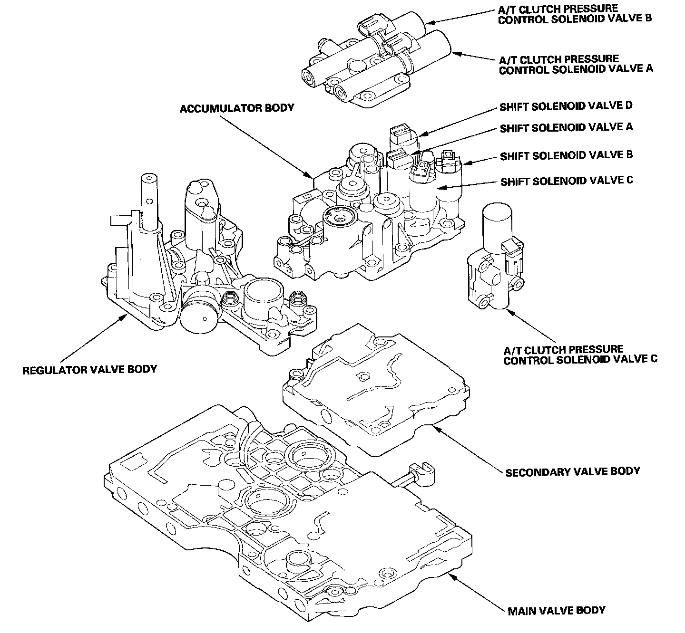
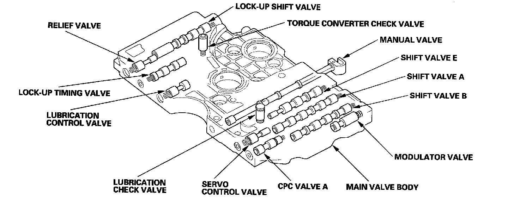
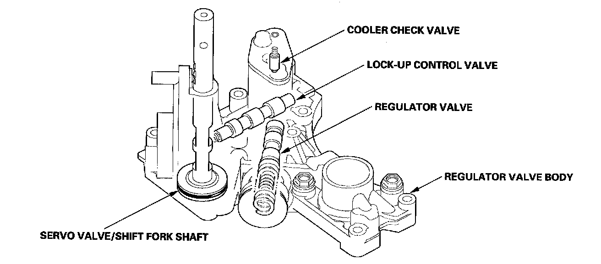
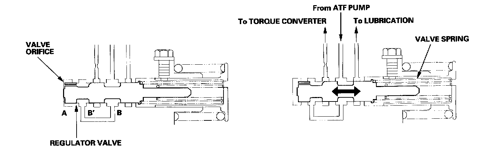
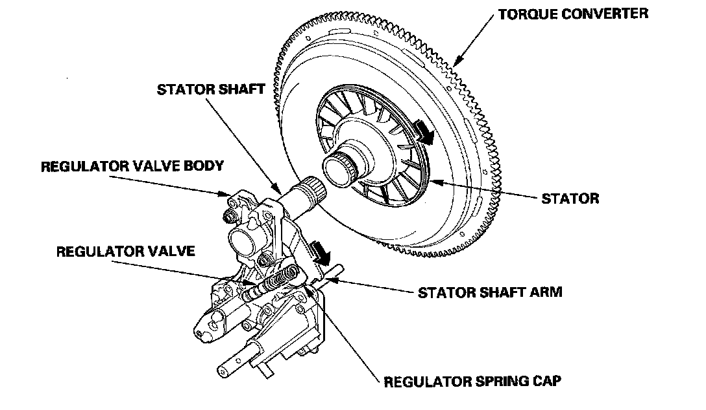
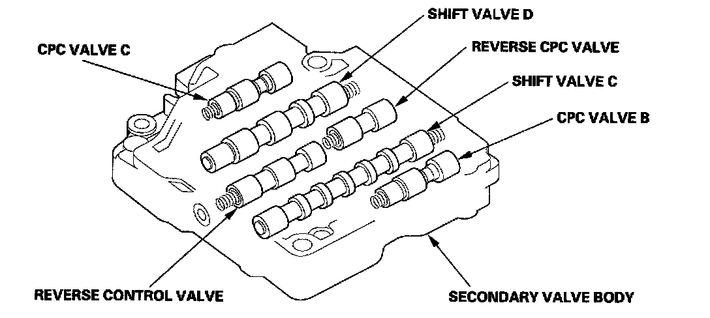
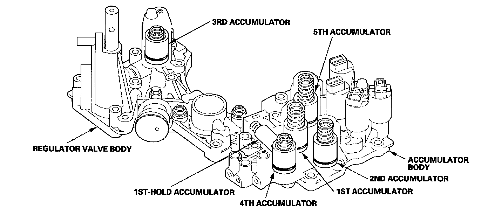

Hydraulic Controls
Hydraulic ControlsThe valve body includes the main valve body, the regulator valve body, the secondary valve body, and the accumulator body. The ATF pump is driven by splines on the end of the torque converter which is attached to the engine. Fluid flows through the regulator valve to maintain specified pressure through the main valve body to the manual valve, directing pressure to each of the clutches. Shift solenoid valves A, B, C and D are mounted on the accumulator body. A/T clutch pressure control solenoid valves A, B, and C are mounted on the transmission housing.

Main Valve Body
The main valve body contains the manual valve, the modulator valve, the torque converter check valve, shift valve A, shift valve B, shift valve D, shift valve E, CPC valve C, the relief valve, the lock-up shift valve, the lock-up timing valve, the lubrication control valve, the lubrication check valve, and the ATF pump gears. The primary function of the main valve body is to switch fluid pressure on and off to control hydraulic pressure going to the hydraulic control system.

Regulator Valve Body
The regulator valve body is located on the main valve body. The regulator valve body contains the regulator valve, the cooler check valve, the lock-up control valve, the servo valve, and the 3rd accumulator.

Regulator Valve
The regulator valve maintains constant hydraulic pressure from the ATF pump to the hydraulic control system, while also furnishing fluid to the lubrication system and torque converter. Fluid from the ATF pump flows through B and B'. Fluid entering from B flows through the valve orifice to the A cavity. This pressure of the A cavity pushes the regulator valve to the spring side, and this movement of the regulator valve uncovers the fluid port to the torque converter and the relief valve. The fluid flows out to the torque converter and the relief valve, and the regulator valve returns under spring force. According to the level of the hydraulic pressure through B, the position of the regulator valve changes, and the amount of fluid from B' through the torque converter changes. This operation is continued, maintaining the line pressure.

Increases in hydraulic pressure according to torque are provided by the regulator valve using stator torque reaction. The stator shaft is splined to the stator in the torque converter, and its arm end contacts the regulator spring cap. When the vehicle is accelerating or climbing (torque converter range), stator torque reaction acts on the stator shaft, and the stator arm pushes the regulator spring cap in the direction of the arrow in proportion to the reaction. The stator reaction spring compresses, and the regulator valve moves to increase the line pressure which is regulated by the regulator valve. The line pressure reaches its maximum when the stator torque reaction reaches its maximum.

Secondary Valve Body
The secondary valve body is on the main valve body. The secondary valve body contain shift valve C, shift valve D, CPC valve B, CPC valve C, the reverse control valve, and the reverse CPC valve.

Accumulator Body
The accumulator body is on the secondary valve body, and contains theist, 1st-hold, 2nd, 4th, and 5th accumulators. The 3rd accumulator is in the regulator valve body.
